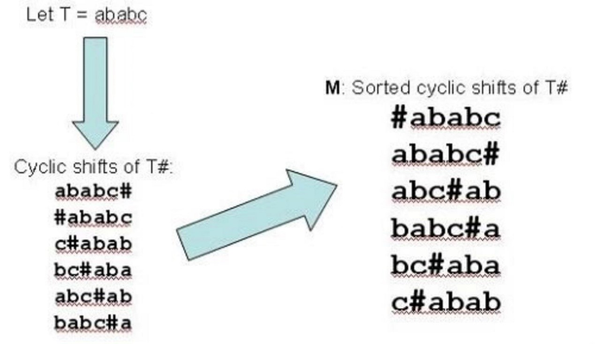

BWT数据压缩算法
在全文检索中通常要对索引进行压缩存储，在压缩之前如果对文本进行一定的可逆变换能够使之更易压缩，BWT就是这样一种变换.
通过一个例子来介绍BWT,假设一段待转换的文本为:ababc, 则BWT的过程如下:

在T后插入结束符#得到新的文本串T#,循环左移,每次一位,得到一个|T#|行的矩阵,按首字母排序得到M
F = first column of M
L = last column of M
BMT使用L来代表T，这样做的原因是L通常比T更容易压缩（具有很多连续的相同元素），那么怎么通过L恢复出F呢？
注意下面的性质：
- 1、L的第一个元素是T中的最后一个元素
- 2、对于M中的每一行（第一行除外）第一个元素都是最后一个元素的下一个元素
利用这两个性质以上面的例子说明怎么恢复T:
c是最后一个元素，然后找c的前一个元素，因为M中仅有最后一行是以c开头的，则这一行的b是c的前一个元素，
再找b的前一个元素，在M中找以b开头的元素，有两行（4、5），到底是哪一行呢？只需看刚才以c开头的那一行之前，在L中出现了几个b,这里出现了一个，
所以应该看第5行，也就是b之前是a。继续找a的前一个元素。。。。。
显然不能整个存储M，那们上面的过程如何在实际中运用，答案是建立 一个L-M Mapping（LF）的辅助向量
LF[i]=C[L[i]]+ri
其中 C[c]是字符c在F中的zeroth occurrence位置(也就是c-1字符最后出现的位置)，ri是c在L[1,i]中c的出现次数
所以使用BWT,我们最后得到的是L和LF，回复T的算法为：
For each i = u-1, …, 1
s = LF[s] (threading backwards)
T[i] = L[s] (read off the next letter back)